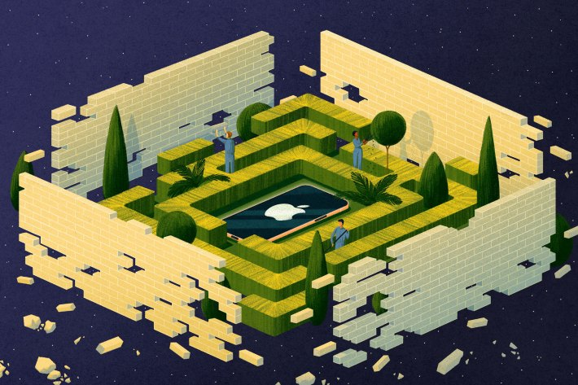
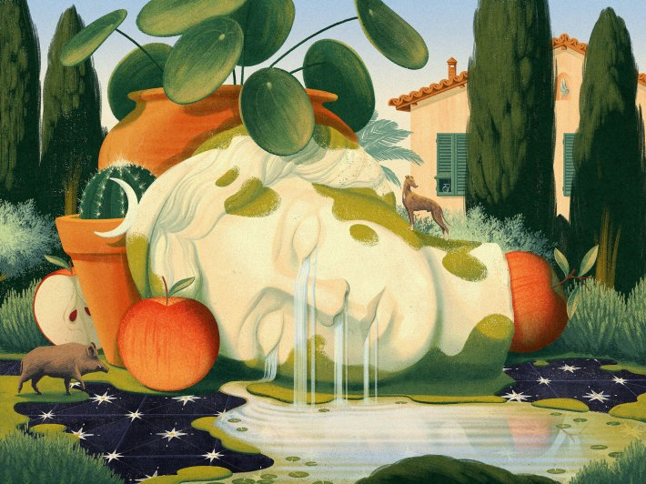
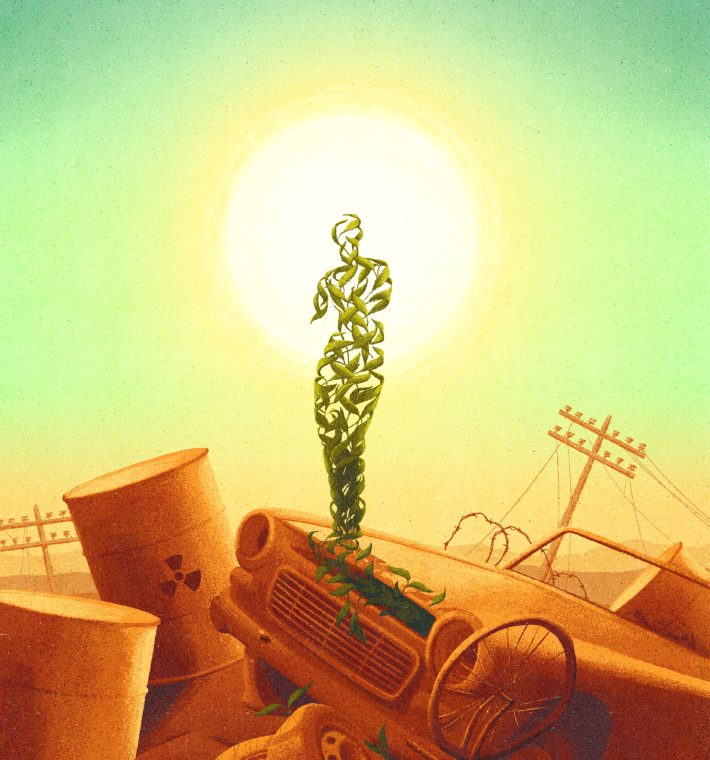
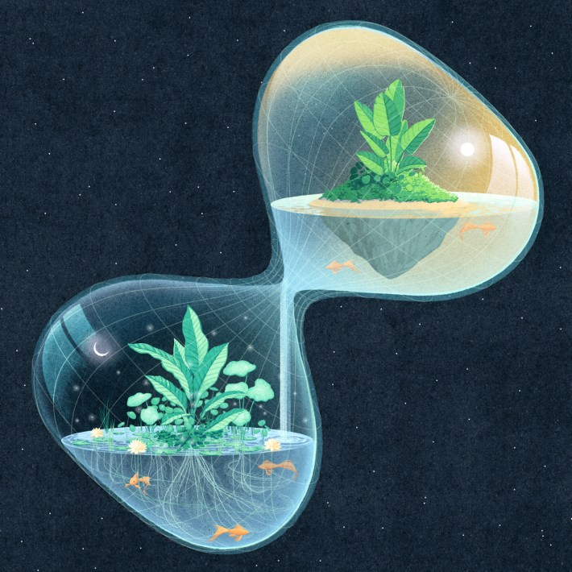

This article is part of series of Nautilus interviews with artists, you can read the rest here.
Browsing through Myriam Wares’ art is like wandering through a dream. Familiar objects loom over alien landscapes, faceless figures navigate impossible architecture, and the boundaries of the natural and supernatural blur. For Ware, whose illustrations have appeared in The Verge, The New York Times, and Nautilus, creating these magical realms involves careful planning. Unlike how we reconstruct dreams after waking—stitching together fleeting details and residues of emotion—Ware thoughtfully curates symbols to convey feelings and ideas. She recently sat down to answer our questions about her creative process, the difference between digital and analog painting, and the future of art.
What drew you to the arts in the first place?
I think I’ve always been an illustrator at heart. If I look back, I started drawing before I even spoke my first word. As a child, I spent a lot of time copying illustrations from my picture books. My father had an M.C. Escher book lying around the house; I remember being so fascinated by the artist’s impossible universe. It was my dream to one day be able to create my own world.
Coming out of high school, I had no idea what I wanted to do for the rest of my life, so I signed up for a fine arts program, then later switched to commercial illustration. I wasn’t thinking so far ahead back then, I just continued doing what I did best. Things eventually fell into place, and I started freelancing full time soon after graduating.

The Verge: The walls of Apple's garden are tumbling down. Image courtesy of Myriam Wares.
Can you walk us through your process?
My process is always on and running in the back of my mind. Despite having a style that leans more towards surrealism, much of my inspiration comes directly from the observable world. I make it a point to take some time away from my computer and spend some time outdoors. I’m always accumulating a bank of visual images in my mind for future use, which I refer to when the time comes to sit down and do the work.
More concretely, I have dozens of Pinterest boards full of reference photos of plants, fruits, architecture, classical artworks, and so on. This has become my own personal library of symbolism. Creating an illustration, in a way, is translating an idea or feeling into an image. When given an assignment, the first step consists of pinpointing what needs to be communicated, then figuring out how to say it using symbols rather than words.
How do you work through a creative block?
I find getting to work regardless gets me out of it. I start drawing without giving too much thought about whether what I’m doing will be good or not. I find action naturally leads me out of any block or anxiety I might have about a given piece. Having a routine also helps. If I get into the habit of producing work during the same period of time every day, inspiration flows more naturally. If instead I wait for inspiration to strike before getting to work, I’ll be waiting for a long time.
A lot of your work features surreal elements, how would you describe your aesthetic?
I hear my work referred to as surrealism a lot—and use the label myself sometimes. I definitely take some inspiration from surrealist painters, notably Magritte. I love how he twists familiar objects in unexpected ways, offering us new ways to look at reality.
Some other surrealist painters used a more spontaneous "automatic" approach to painting, which I don't relate to as much. I'm rather intentional about the elements I include in my work and ponder their meaning a lot. Perhaps the label “magical realism,” or just “symbolism,” would be better suited.

Image courtesy of Myriam Wares.
Not long ago you started painting again after working exclusively in digital. What was that like?
Refreshing. I love working digitally, but I find myself longing for a time before technology became so present in our lives, when you could just sit with a painting for a while. After a few years of constantly producing work under tight deadlines, it’s easy to get the feeling of mass-producing one’s own work.
Painting has a grounding effect on me, similar to meditation. Everything takes twice as long to do and mistakes aren’t so easily erasable, so every move needs to be carefully considered. I try to carve some time out of my hectic schedule to paint a bit every month. Little by little, between client commissions, I’d like to build up a collection of paintings and see where that leads me.
You created the cover for Nautilus Issue 32, “Dawn of the Heliocene,” about how the next geological epoch should be named for humans’ harnessing of solar energy. What about that story captured your imagination?
I remember being mesmerized by Summer Praetorius' beautifully written and deeply personal piece, which centers around the sun and our use of its energy. She makes a case for why we should name the new geological epoch Heliocene, rather than the more somber Anthropocene.
The sun is the protagonist of the story, which inspired me to place it at the center of the composition. I wanted to represent it as both a healing force and a potentially destructive one. We can choose to move forward using the sun's energy in a harmful way via fossil fuels, which the author refers to as “trapped sunlight,” or in a new and cleaner way via solar panels.
The plant that grows amongst the rubble is symbolic of life's persistence through past cataclysmic disasters. Illustrating it person-shaped conveys that humans can be adaptable in much the same way in the face of future challenges.

Nautilus: Issue 32 cover. By Myriam Wares.
Is there anything you think scientists can learn from artists—or vice versa?
I’ve often heard that the best scientists, like artists, are creative souls. On the other hand, I think great artists are investigative about the world that surrounds them, as are scientists. Both certainly have an inexhaustible curiosity for the world and seek to understand it more deeply. Perhaps we are more alike than conventional wisdom would presume.
Over the past 10 years or so there have been a lot of technological changes in how art is created and disseminated—the rise of generative AI, the proliferation of social media, more advanced digital tools, and so on. As an art history enthusiast, what do you think the future holds for art and artists?
This is a complex and polarizing question, which no one can answer with certainty. Personally, I’m not worried that AI will ever replace artists. That said, it will likely have a certain impact on the creative world.
For example, I'm now seeing some people approach me with AI-generated briefs to illustrate in my own style. I’m not quite sure what to make of this new occurrence, but I personally do not see much value in including AI in my process, considering doing such a thing was unheard of just one year ago. This removes the artist from parts of their process, which usually impacts the final piece for the worse.
I think anyone alive has had the experience of being profoundly moved by a work of art—and knows quite intuitively that machines fall flat in that regard. The creative process is a deeply personal one that should involve the artist from start to finish.
My real fear is not that computers will replace art, but rather that the perceived value of creative work might diminish, considering the production cost of AI-generated visuals is extremely low. Unfortunately, we cannot control the spread and use of new technologies. What we can do is focus our creative efforts on what makes us better than computers. I wouldn’t worry too much about the rest.

Image courtesy of Myriam Wares.
Do you have any upcoming projects you’re excited about?
I’m fortunate enough to have a collection of inspiring commission pieces to work on, including book covers, beer labels, and a vinyl record. Beyond those, I’m excited to continue working on my personal projects and paintings.
Interview by Jake Currie.
Lead image courtesy of Myriam Wares.